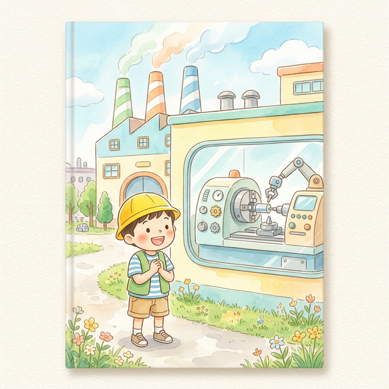
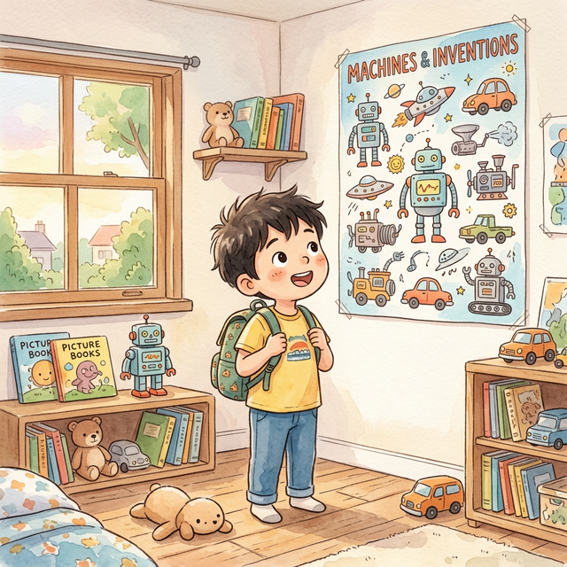
Manabu is a boy who loves making things. Today, he's going on a factory tour with his dad! "I wonder what kind of machines are there?" Manabu is so excited!
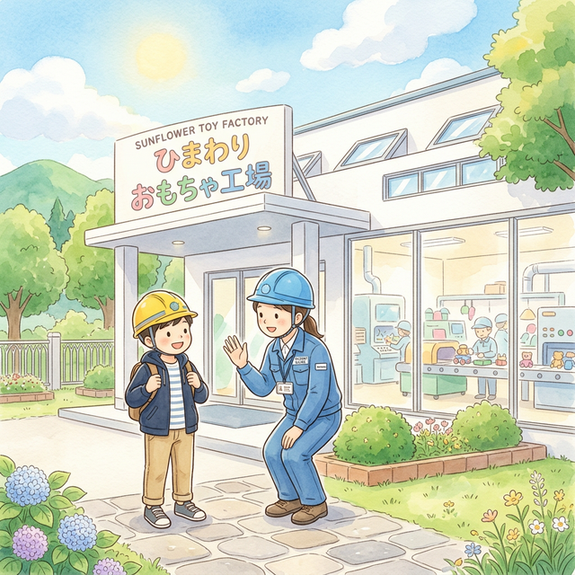
They've arrived at a huge factory! "Wow, it's so big!" A friendly guide welcomed them with a big smile. "Let's go meet the machines!"
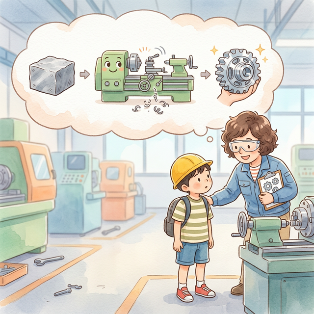
"Machine tools are machines that make other machines and their parts! They cut hard metal and drill holes to create all kinds of shapes."
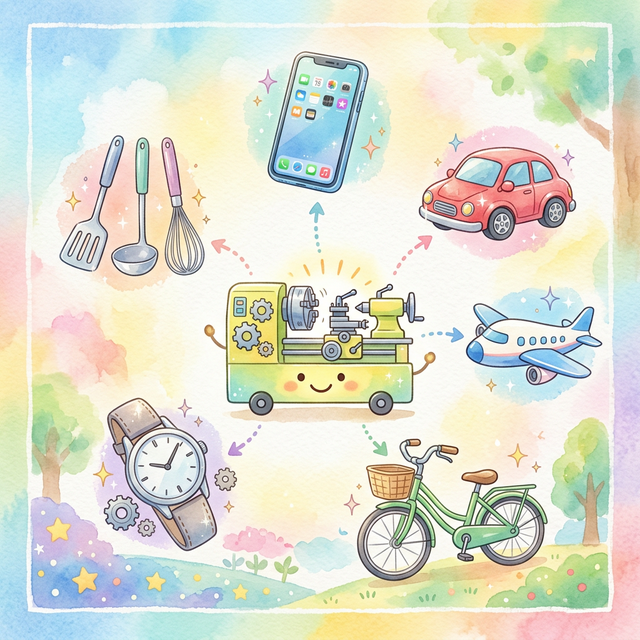
Smartphones, cars, airplanes, bicycles, watches... The things all around you are made with parts created by machine tools!
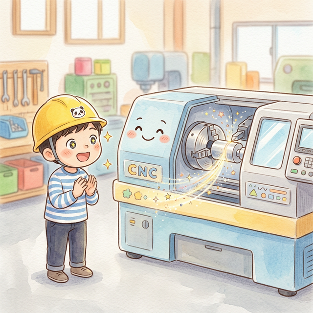
"This is a Turning Center! It's great at making round things. It spins the material around and around, while a blade carves it into shape. It spins just like a top!"
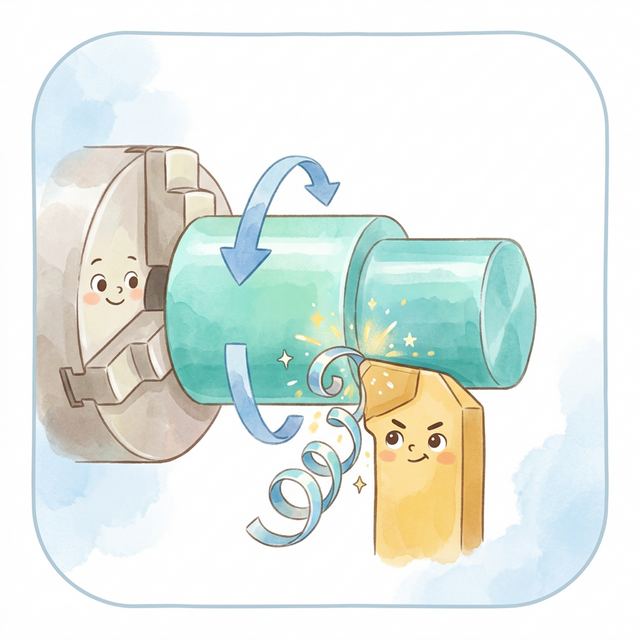
The material spins round and round. When the blade touches it... Swish, swish, swish! Metal shavings come curling out like ribbons!
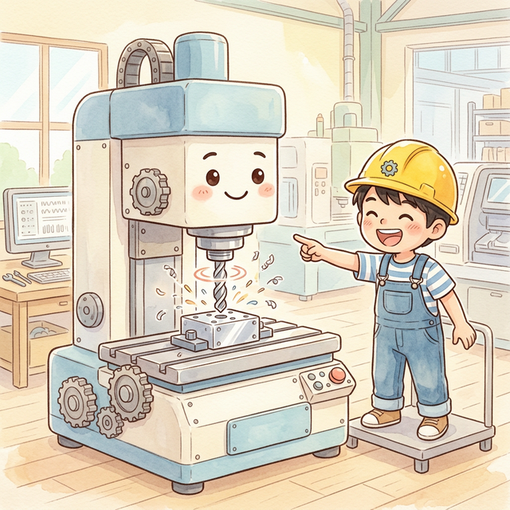
"Next is the Machining Center! It can drill holes, flatten surfaces, and carve grooves... it can do anything! It's an all-around champion! It can even change its own tools!"
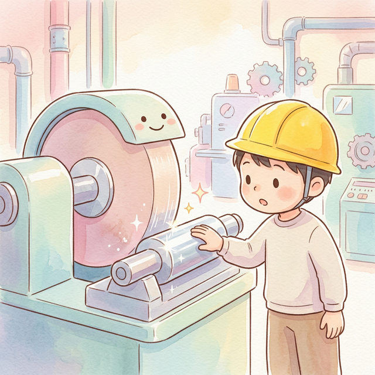
"This machine is a Grinding Machine. It's a master at making things smooth and shiny! A big grinding wheel spins around and smooths the surface. Shiny like a mirror!"
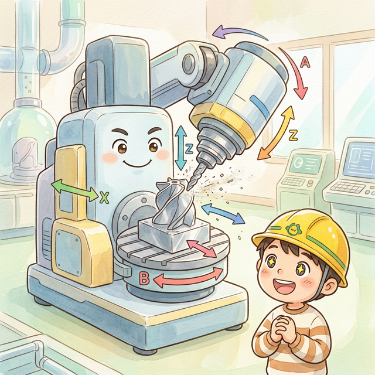
"Last is the 5-Axis Machine! It can move in five directions, so it can make any complex shape! It can even make airplane wings! It's the king of machines!"
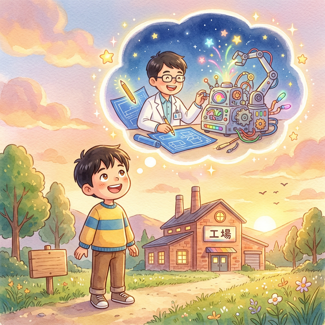
After finishing the factory tour, Manabu looked up at the sunset and thought: "When I grow up, I want to become an engineer who makes amazing things!"
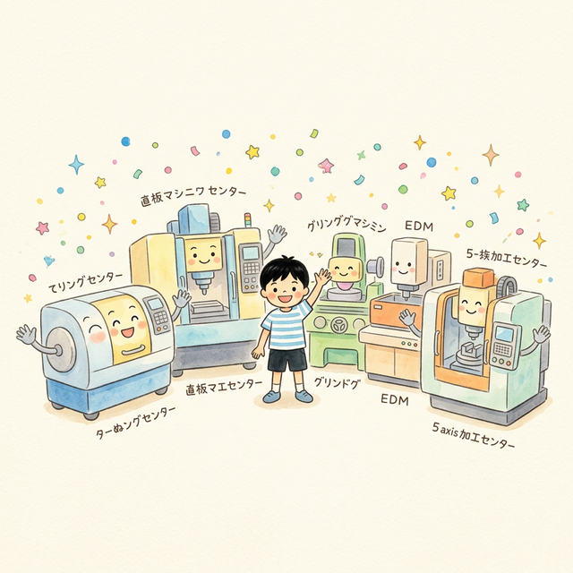
(For Parents) Use everyday objects as a starting point to ask, "I wonder how this was made?" and talk about it together.